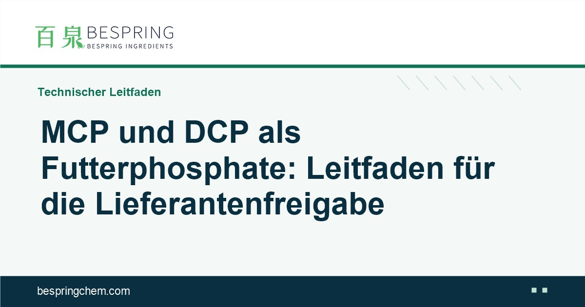

Natriumtripolyphosphat (STPP)
CAS: 7758-29-4
Prüfen Sie Gehalt und Korngröße für Fleisch- und Fischwaren.
Fleischverarbeitung Verarbeitung von Meeresfrüchten Geflügelprodukte Milchprodukte Waschmittel Produkt anzeigenBespring Chemical
Finden Sie Rohstoffe für Lebensmittel, Futtermittel und technische Anwendungen. Prüfen Sie die für Ihren Prozess passende Qualität und geben Sie bei der Anfrage die Spezifikation, Menge und den Lieferort an.
Produktname, Abkürzung oder CAS-Nummer
Anwendungen
Beginnen Sie mit Ihrer Produktionsherausforderung. Entdecken Sie Inhaltsstofffunktionen, typische Anwendungen und empfohlene Produkte für sechs Branchen, die wir bedienen.

Textur, Haltbarkeit, Wasserretention und Formulierungsstabilität.
Entdecken Sie Lösungen
Bioverfügbare Mineralquellen für Futter- und Premix-Produktion.
Entdecken Sie Lösungen
Builder, Komplexbildner und funktionelle Hilfsstoffe für Reinigungssysteme.
Entdecken Sie Lösungen
Kontrolle von Ablagerungen, Enthärtung und Konditionierung von Prozesswasser.
Entdecken Sie Lösungen
Prozesschemikalien, die die Trennung und Erzbehandlung unterstützen.
Entdecken Sie Lösungen
Nährstoffinputs und Rohstoffe für die Düngemittelproduktion.
Entdecken Sie LösungenProduktauswahl
Bespring Chemical stellt eine breite Palette industrieller chemischer Rohstoffe für Lebensmittel, Futtermittel, Wasseraufbereitung, Bergbau, Landwirtschaft und industrielle Anwendungen bereit.
CAS: 7758-29-4
Prüfen Sie Gehalt und Korngröße für Fleisch- und Fischwaren.
Fleischverarbeitung Verarbeitung von Meeresfrüchten Geflügelprodukte Milchprodukte Waschmittel Produkt anzeigenCAS: 10124-56-8
Vergleichen Sie Spezifikation und Prüfmethoden für Ihre Rezeptur.
Wasseraufbereitung Waschmittel Milchprodukte Getränkeverarbeitung Keramik Produkt anzeigenCAS: 7320-34-5
Bewerten Sie pH-Wert, Komplexierung und Wasserbindung unter Ihren Prozessbedingungen.
Fleischverarbeitung Verarbeitung von Meeresfrüchten Milchprodukte Wasseraufbereitung Industrielle Reinigung Produkt anzeigenSaures SALP · INS 541(i)
Prüfen Sie das Reaktionsprofil für Backwaren und die Anforderungen des Zielmarkts.
Backindustrie Bäckereiprodukte Kuchen- und Mehlverarbeitung Lebensmittelherstellung Backtriebmittelsysteme Produkt anzeigenCAS: 7757-93-9 / 7789-77-7
Prüfen Sie die wasserfreie Form sowie die Bezugsbasis für Calcium- und Phosphorgehalte.
Tierernährung Geflügelfutter Feed-Premix Mineralstoffpräparat Landwirtschaftliche Dünger-Rohstoffe Produkt anzeigenCAS: 10031-30-8
Prüfen Sie Hydratstufe, Spezifikation und Verhalten in Ihrer Rezeptur.
Tierernährung Aquakulturfutter Nahrungsanreicherung Mineralstoffpräparat Phosphat-Dünger-Rohstoff Produkt anzeigenCAS: 9004-32-4
Vergleichen Sie Viskosität samt Messbedingungen, Substitutionsgrad und Korngröße.
Lebensmittelzutaten Waschmittelherstellung Industriechemie Bergbauchemikalien Papierherstellung Keramik Produkt anzeigenCAS: 4075-81-4
Prüfen Sie Lebensmittelkategorie und Prozessbedingungen sowie die Regeln des Zielmarkts.
Bäckerei Lebensmittelkonservierung Milchprodukte Verarbeitete Lebensmittel Futterzusätze Produktdetails ansehenPhosphatkatalog
Vergleichen Sie Phosphatgruppen nach chemischer Identität, Qualität, Funktion und Anwendung. Bespring unterstützt die Zuordnung von Spezifikationen und die Produktqualifizierung für Verarbeiter, Formulierer und Distributoren.
Einkauf und Qualität
Ein aussagekräftiges Angebot umfasst mehr als den Preis. Produktidentität, Qualität, Prüfkriterien und Versandanforderungen sollten vor der kaufmännischen Freigabe abgestimmt werden.
Vergleichen Sie Gehalt, Grenzwerte für Verunreinigungen, Partikelgröße, pH-Wert, physikalische Form und Prüfmethoden mit Ihrer Zielspezifikation.
Fordern Sie die aktuelle Spezifikation oder das technische Datenblatt, das Sicherheitsdatenblatt, ein Muster-COA und zutreffende Qualitäts- oder Regulierungsunterlagen an.
Definieren Sie Anwendung und Bewertungskriterien, damit das Muster der zu qualifizierenden Produktqualität entspricht.
Bestätigen Sie Verpackungsgröße, Paletten- oder Containeranforderungen, Bestimmungshafen, Incoterm und benötigte Versanddokumente.
Produktauswahl
Gleichen Sie Stoffidentität, Hydratstufe, Spezifikationsgrenzen und Prüfmethoden mit Ihrer Anwendung ab.
Einkauf
Nennen Sie den Stoff, die benötigte Qualität, den Einsatzbereich, die Spezifikation, die voraussichtliche Menge, die Verpackung und den Lieferort. Ergänzen Sie die benötigten Unterlagen.
Unternehmen
Bespring Chemical wurde 2014 in Jiangsu, China, gegründet. Geben Sie Ihre Anforderungen an Qualität und Herkunft bei der Anfrage an.
Geben Sie Lieferort oder Zielhafen, Verpackung und Begleitdokumente an. Ergänzen Sie bei einer Einfuhr das Bestimmungsland und die gewünschten Lieferbedingungen.
Gleichen Sie vor der Bestellung Qualität und angebotenen Herstellungs- oder Verpackungsstandort ab. Prüfen Sie beim Wareneingang die Chargennummer auf Verpackung und Analysenzertifikat (COA).
Herkunft und Rückverfolgbarkeit prüfen · Qualitätsunterlagen auswählen
Anwendungsleitfäden
Entdecken Sie, wie Bespring-Zutaten praktische Formulierungs- und Prozessbedürfnisse in Lebensmitteln, Futtermitteln, Wasseraufbereitung und industrieller Fertigung abdecken.

Natriumtripolyphosphat · INS 451(i)
Eine praktische Phosphatanwendung zur Feuchtigkeitskontrolle, zur Unterstützung der Textur, zur Stabilität der Emulsion und zur gleichmäßigen Verarbeitung von Fleisch- und Geflügelprodukten.
Lesen Sie den Anwendungsfall
Tetrakaliumpyrophosphat · INS 450(v)
Kaliumbasierte Phosphatfunktionalität für erlaubte Meeresfrüchte-Formulierungen, die Pufferung, Komplexierung und Feuchtigkeitsmanagement erfordern.
Lesen Sie den Anwendungsfall
Calciumpropionat · E282
Eine Konservierungsanwendung, die sich auf Schimmelkontrolle und Haltbarkeitsplanung für Brot, Brötchen und andere Hefebackprodukte konzentrierte.
Lesen Sie den Anwendungsfall
Monocalciumphosphat · Futtermittelqualität
Eine Mineralfutteranwendung zur Abgabe verfügbaren Phosphors und Kalziums in Geflügelfutter und Fertigmischungssystemen.
Lesen Sie den Anwendungsfall
Natriumhexametaphosphat · CAS 10124-56-8
Eine Wasserbehandlungsanwendung, die Komplexierung und Schwellenwertwirkung nutzt, um Belagskontrollprogramme in industriellen Systemen zu unterstützen.
Lesen Sie den Anwendungsfall
Natriumtripolyphosphat · Technische Qualität
Anwendung von STPP als Builder zur Wasserenthärtung, Schmutzdispergierung und Unterstützung der Reinigungsleistung in pulverförmigen Formulierungen.
Lesen Sie den AnwendungsfallSTPP · SHMP · TSPP · TKPP · Mischungen
Auswahl, Prüfung und Beschaffung von Phosphaten für Fleisch, Geflügel, Fisch und Seafood.
Anwendungsbeispiel lesenSAPP · SALP · MCP · Mischungen
Reaktionsprofil für Volumen, Krumenbild, Farbe und Geschmack abstimmen.
Anwendungsbeispiel lesen
Ortho- · Pyro- · Polyphosphate
Phosphate für Schmelzkäse, Milchgetränke und pflanzliche Drinks auswählen.
Anwendungsbeispiel lesen
TCP · DCP · MCP in Lebensmittelqualität
Quellen nach Gehalt, Korngröße, Dispergierung, Sensorik und Dokumentation vergleichen.
Anwendungsbeispiel lesenTechnische Hinweise zum Vergleich von Produkten, Spezifikationen und Qualifizierungsanforderungen.
Überprüfung der rechtlichen Identität, Produktherkunft, Spezifikationen, Qualitätsdokumente, Rückverfolgbarkeit und Exportfähigkeit. Der Leitfaden bietet eine strukturierte Qualifikationscheckliste für internationale Beschaffungsteams.
Vollständigen Leitfaden lesen →Vergleichen Sie STPP und SHMP nach chemischer Identität, Funktion, Klasse, Spezifikation, physischer Form und Anforderungen an die Lieferantenfreigabe.
Erfahren Sie mehr →Vergleichen Sie Nährstoffidentität, Assay, physikalische Form, Schadstoffgrenzen und Dokumente bei der Beschaffung von MCP oder DCP.
Erfahren Sie mehr →Verstehen Sie, wie Qualität, Spezifikation, Verunreinigungsgrenzen, Herstellungskontrollen und Markttauglichkeit die Zulassungsbasis verändern.
Erfahren Sie mehr →Fragen und Antworten
Wählen Sie im Phosphatkatalog die Stoffgruppe und lesen Sie die Produktseite für Ihren Einsatzbereich. Prüfen Sie die Spezifikation samt Prüfmethoden.
Nennen Sie Stoff, Qualität, Spezifikation, voraussichtliche Menge, Verpackung und Lieferort. Bei einem Muster helfen zusätzlich der vorgesehene Einsatz und Ihre Abnahmekriterien.
Geben Sie Produkt, Qualität, Einsatzbereich und Dokument an. Liegt bereits eine Lieferung vor, ergänzen Sie Bestell- oder Chargennummer. Nutzen Sie die Übersicht der Qualitätsunterlagen.